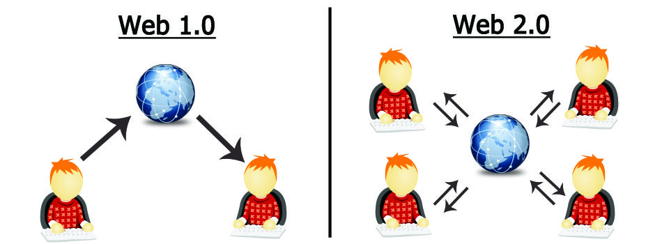

Web 2.0
Definition: Web 2.0 refers to the second generation of the World Wide Web, which emphasizes user-generated content, usability, and interoperability. It is characterized by dynamic and interactive web applications that allow users to collaborate, share information, and create content online.
Features: Web 2.0 introduced several key features, including social media platforms, blogs, wikis, and multimedia sharing sites. It enabled users to actively participate in the creation and sharing of content, fostering a more collaborative and interactive online environment. Web 2.0 also saw the rise of web applications that provided rich user experiences, such as Google Docs, Facebook, and YouTube.
Examples: Some examples of Web 2.0 websites include Facebook, Twitter, Instagram, Wikipedia, and YouTube. These platforms allow users to create and share content, connect with others, and engage in online communities. Web 2.0 has transformed the way people interact with the web, making it a more dynamic and participatory space for users around the world.
